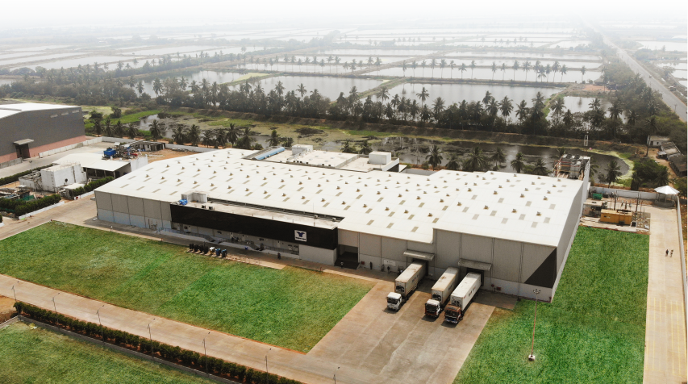
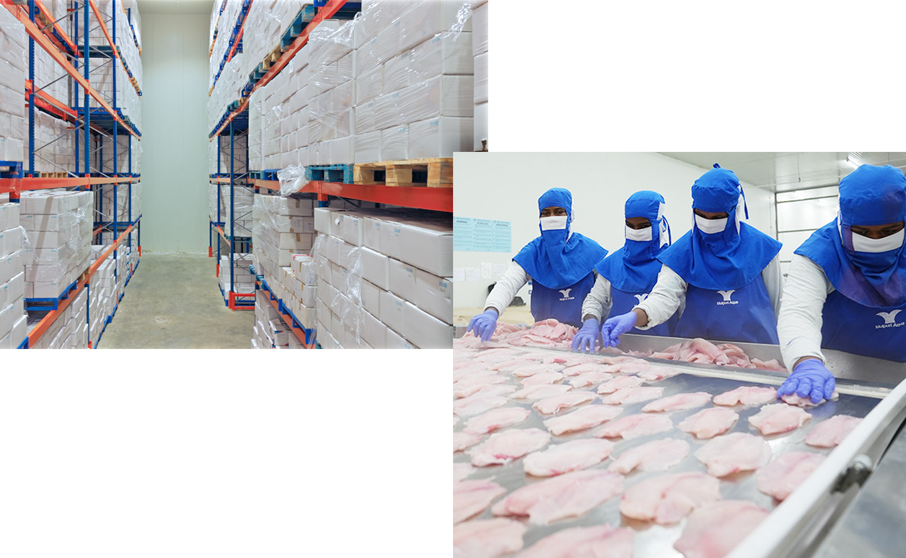

State-of-the-art facilities designed for safety, efficiency, and scale.
Our processing facility spans over 120,000 sq. ft. and is equipped with advanced machinery sourced from global leaders in seafood processing technology. The plant layout is designed in strict compliance with HACCP principles, ensuring efficient workflow while preventing any risk of cross-contamination. With a daily processing capacity of 50 metric tonnes, the facility integrates modern automation and rigorous quality control systems.


We utilize advanced rapid-freezing technology to preserve the cellular structure of the fish, ensuring texture and taste remain locked in.
Unlike aggregators, we own and manage a significant portion of our aquaculture farms. This vertical integration gives us complete control over: